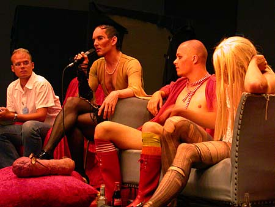

| Køn i Spil |
27. 28. & 29. August - 2004 |
 Diskussion - Miss Fish speaking. Photo: Søde Car O'lina. "You are born naked - the rest is drag" (RuPaul) KØN I SPIL inviterer til åben debat om køn, seksualitet og magt på scenen. I tre dage stiller nordiske scenekunstnere, teater- og kønsforskere skarpt på, hvad ligestilling og seksuel frigjorthed betyder for kønnenes iscenesættelse i scenekunsten. KØN I SPIL byder på nye kreative og akademiske indfaldsvinkler til temaet »køn på scenen« gennem workshops, foredrag og sceniske indslag. KØN I SPIL gør op med herskende teaterkonventioner, udfordrer kønsforskningen og giver et mere kompleks billede på kvinde- og manderollen i scenekunsten. KØN I SPIL præsenterer og krydskombinerer en række af de bedste forskere og scenekunstere inden for området: KEYNOTES SPEAKERS Teater- og genusforsker, PhD Tiina Rosenberg (S), taler om »Kvindekroppen på scenen« og perspektiverer synet på køn og seksualitet fra antikken til nutidens populærkultur. Den internationale teaterforskerProfessor David Savran (USA), specialist i maskulinitetsstudier og queer theory, analyserer grænselandet mellem magt, køn og seksualitet i relation til scenekunsten. Ph.d studerende Ken Nielsen (USA/DK) og Ulrika von Schantz (S), supplerer med egne forskningsresultater inden for køns- og teaterforskningen. Instruktør og teaterchef Madeleine Røn Juul (DK) bidrager med sin kontroversielle fortolkning af Shakespeares Julius Cæsar. PERFORMERE OG PANELDELTAGERE Den nordiske teatergruppe Subfrau optræder med deres spektakulære drag-kingshows. 8 skuespillerinder undersøger, hvad der konstruerer kvinde- og mandlighed og dykker ned i den kvindelige scenekunstners arbejde på scenen. Trash-Drag gruppen dunst udfordrer kønsopfattelsen med deres anarkistiske Gay Electro Punk Show The Shadow People. En kaotisk blanding af magt, seksualitet og kropslig iscenesættelse. Shabana Rehmann, Norges mest sexede stand-up komiker, bruger sig selv som farvet, kvinde og indvandrer i en syndflod af kontroversielle spørgsmål i et univers, hvor alt vendes på hovedet. KØN I SPIL modereres af den svenske kønsforsker, Joakim Rindå og den svenske dramaturg og journalist, Gunilla Edemo. TID: 28. og 29. august STED: Københavns Universitet, Amager MÅLGRUPPE: Alle ANTAL DELTAGERE: minimun 45 PRIS: 700,- (studerende: 300,-) TILMELDINGSFRIST: 16.august www.nordscen.org/index.php?id=311 www.nordkalender.org/genus/arrangement.html?id=1011&back=index.html www.sociology.ku.dk/sochrc/koordinationen/nyhedsbrev/0404.htm |
|